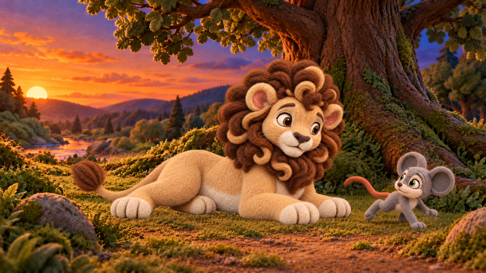

Original r006

Candidate r007


Unselected. One authorized GPT edit; zero retries. Body/limb connections remain concerning; protected scene pixels changed. Please review without treating this as a passing repair.

Candidate SHA-256: c149c1b47c4688deaa18347738557601b425a45378b759b3ccb6a49b4da75e22
Native size 1672 × 941. Changed pixels outside the broad diagnostic Milo box: 1401422. This box is not an approved mask.